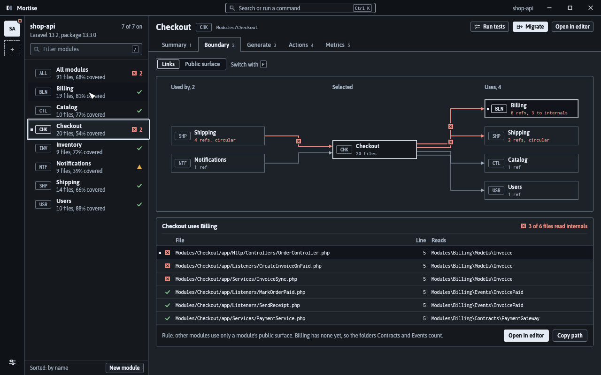

Mortise
A desktop companion
for
Laravel modules
.
Modules, links and circular use at a glance
Boundary rules your team shares
Run the package's commands, never blind
■
nwidart/laravel-modules
Rust · egui
macOS · Windows · Linux